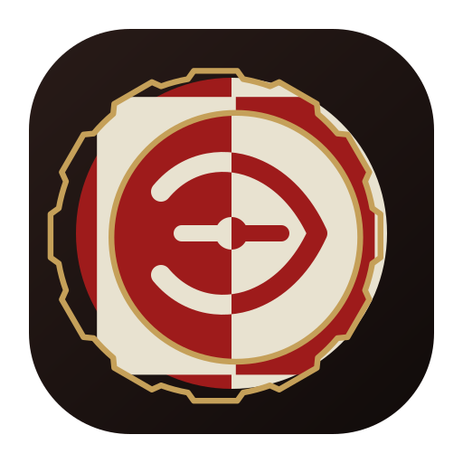

Foreground Source
The same SVG used as the visual source when maintaining the Android foreground drawable.
The top section prioritizes what you are most likely to see on real phones. Pixel and CN Android share the same base icon area size here. Their difference is not background size, but the launcher shape applied to the same icon base: Pixel resolves that base to a circle, while CN Android keeps it as a rounded square. This remains a fast style preview rather than a strict numerical simulation of launcher rendering.
This lower section keeps a broader mask comparison for resource-level sanity checks, but it is secondary to the shared-base device previews above.
The same SVG used as the visual source when maintaining the Android foreground drawable.
The rounded-square product-style variant, useful as a reference but not the Android adaptive foreground itself.
